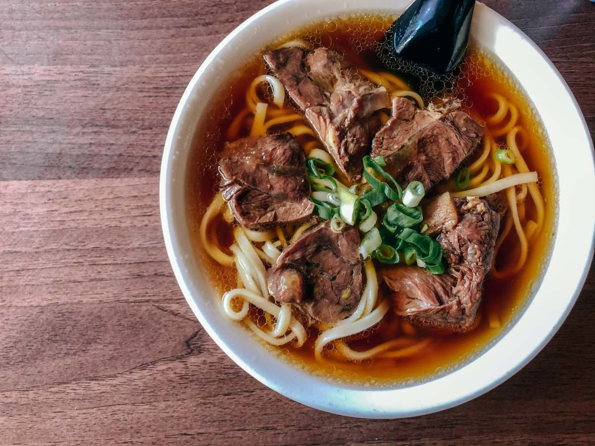
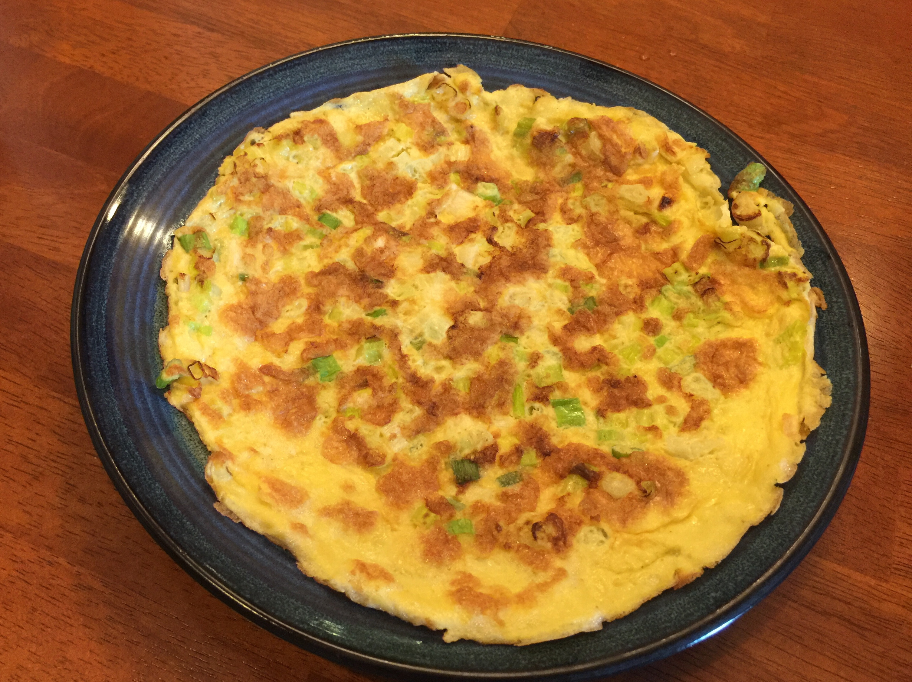
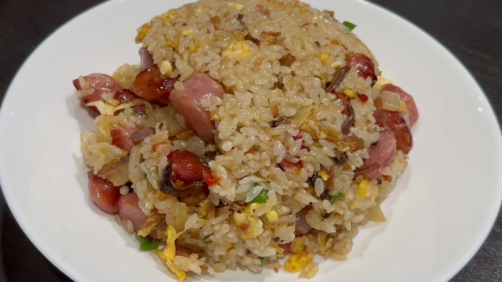

文字+圖片練習 90934219 蘇昱展
料理陳列展示


牛肉麵
昆布柴魚高湯
蔥蛋
心得
魩仔魚XO醬炒飯
材 料
辣味魩仔魚XO醬 1 大匙
白飯 300 g
蔥花 2 大匙
調味料
香菇素蠔油 酌量
黑胡椒粉 酌量
辣味魩仔魚XO醬 1 大匙
白飯 300 g白飯 300 g
蔥花 2 大匙
香菇素蠔油 酌量
黑胡椒粉 酌量
熱油鍋加入1大匙油.先放入辣味魩仔魚XO醬翻炒一下.讓香味飄散出來.再加入白飯拌炒均勻.起鍋前加入所有調味料與蔥花翻拌均勻.
美味料理就可以盛盤端出囉!
